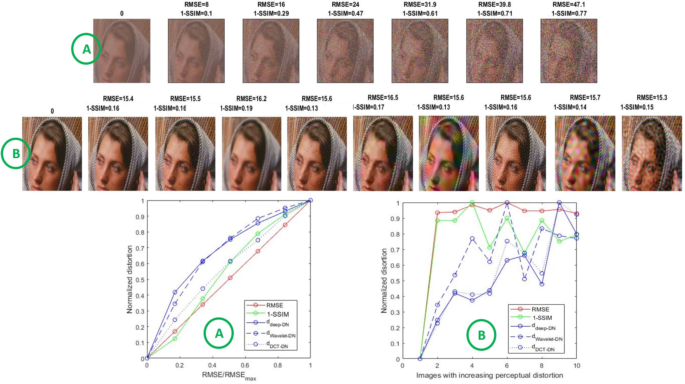
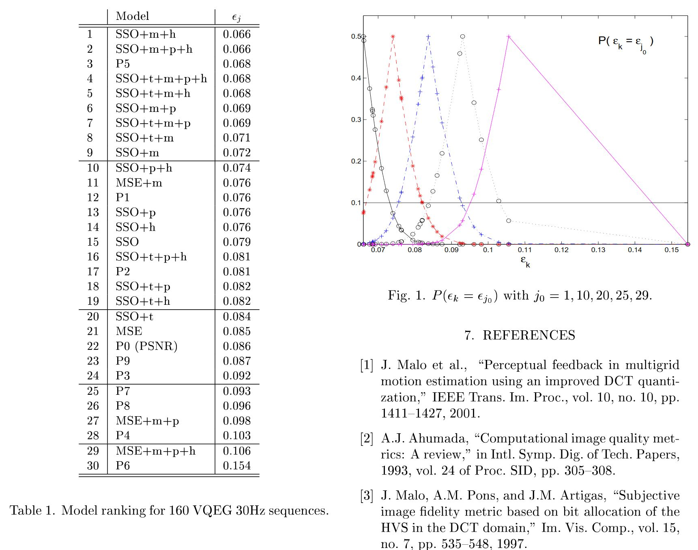

VistaQualityTools:
The Image and Video Quality Toolbox based on Vision Models
Contributors:
Image: J. Malo, V. Laparra, J. Muñoz, I. Epifanio,
A.M. Pons, M. Martinez and E. Simoncelli
Video: J. Malo, J. Gutiérrez and A.B. Watson
jesus.malo@uv.es
(c) Universitat de València 1996 - 2018
The problem:. Given an original image (top) distortions of different nature appear to have different perceptual effect (bottom). The challenge is computing a descriptor of distortion which is correlated with the opinion of observers collected in subjectively rated databases. The complexity of human vision implies that the Euclidean distance (or Mean Squared Error) is not a good proxy for subjective distortion. Nevertheless, the image quality problem goes beyond fitting any flexible model to maximize the correlation with subjective opinion (see [Front. Neurosci. 2018]).
The image distortion measures in VistaQualityTools are based on distances between the original and the distorted scenes in the visual response domain. Therefore, they rely on the cortical descriptions in VistaModels, including metrics based on (a) normalized DCTs, (b) normalized orthonormal wavelets, and (c) multi-layer models with normalized overcomplete wavelets.
All these measures substantially overperform the widely acclaimed SSIM.
Our video quality measure developed at the NASA Ames Research Center is based on the same visual response principle. It achieved the 2nd best performance in the VQEG evaluation phase II.
Download Toolboxes!
(A) Image Quality Metrics:
* Performance in subjectively rated databases
- V1_model_DCT_DN_color
- V1_model_wavelet_DN_color
- BioMultiLayer_L_NL_color (deep-DN)
- Comparison with SSIM and RMSE
* Saturation with linearly increasing energy
* Constant MSE but perceptually increasing distortion
* Models and Distortion Measures
- V1_model_DCT_DN_color: opponent colors, DCT + Divisive Normalization
- V1_model_wavelet_DN_color: Opponent colors, Orthonormal Wavelets + Divisive Normalization
- BioMultiLayer_L_NL_color (or deep-DN): psychophysically sensible cascade of L+NL layers: Spectral integration + Von Kries adaptation, ATD channels and Weber-like saturation, Overcomplete Wavelets + Divisive Normalization
(B) Video Quality:
* Spatio-temporal CSF and energy masking
- Contrast definition
- Sensitivity of the Standard Spatial Observer
- Temporal filtering
- Non quadratic spatial and temporal summation
- Local energy masking
- Field replication model and global shift compensation
Download Toolboxes!
Citation and References
Our solution: The scatter plots show the performance of two perceptual metrics in reproducing subjective opinion. On the one hand (in red) the widely acclaimed Structural SIMilarity index (SSIM) that received the EMMY Award of the American TV Industry in 2015, and, on the other hand (in blue), our metric based on a cascade of L+NL layers [PLoS 2018].
Back to top
(A) Image Quality Metrics
The distortion metrics in VistaQualityTools rely on the three cortical models we have developed over the years (a) DCT transform and Divisive Normalization [IVC 1997, Displays 00, Patt.Rec.03, IEEE Trans.Im.Proc. 06], (b) Orthonormal Wavelets and Divisive Normalization [JOSA A 10, Neur.Comp. 10], and (c) Cascades of linear transforms and nonlinear saturations [PLoS 18, Front. Neurosci. 18].
Performance in subjectively rated-databases

|
Back to top
Saturation of the distortion and perceptual differences in constant-MSE series
Subjective distortion has two distinct properties: (a) visual degradation with linearly increasing Euclidean norm is highly visible for low energy and saturates for high energies, and (b) constant energy (or MSE) does not mean constant perceptual distortion. The image series below illustrate these properties and show how the metrics based on vision models (in blue) qualitatively follow the subjective behavior while MSE and SSIM fail to reproduce the behavior.
|  |
Back to top
Models and Distortion measures
1995 - 2008: Metric based on linear opponent channels, local-DCT and Div. Norm.
This metric is based on an invertible representation originally tuned to reproduce contrast response curves [Pons PhD Thesis, 1997]. It was applied to reproduce subjective distortion opinion [Im.Vis.Comp.97, Displays99] and to improve the perceptual quality of JPEG and MPEG through (a) transform coding of the achromatic channel [Eletr.Lett95, Eletr.Lett99, Im.Vis.Comp.00 Patt.Recog.03, IEEE TNN 05, IEEE TIP 06a, IEEE TIP 06b, JMLR08], (b) the color channels [RPSP12], and (c) by improving the motion estimation [LNCS97, Eletr.Lett98, Eletr.Lett00a, Eletr.Lett00b, IEEE TIP 01].
Download the Toolbox!: V1_model_DCT_DN_color.zip (74MB) 
2009 - 2010: Metric based on linear opponent channels, Orthogonal Wavelets and Div. Norm.
In this metric the parameters of the divisive normalization (linear weights, interaction kernel, semisaturation, excitation and summation exponents) were fitted to reproduce subjective image distortion opinion [JOSA A 10] following exhaustive grid search as in [IEEE ICIP 02]. This model (which relies on the orthogonal wavelets of the MatlabPyrTools) was found to have excellent redundancy reduction properties [LNCS10, Neur.Comp.10].
Download the Toolbox!: V1_model_wavelet_DN_color.zip (14MB)
2013 - 2018: Metric based on a Multi-Layer network with nonlinear opponent channels, Overcomplete Wavelets and Div. Norm.
This metric is based on a multi-layer model (or biologically-plausible deep network) that performs the a chain of perceptually meaningful operations: nonlinear opponent chromatic channels, contrast computation, frequency selectivity and energy masking, and wavelet analysis + cross-subband masking [PLoS 18].
The parameters of the different layers were fitted in different ways: while the 2nd and 3rd layers (contrast and CSF+masking) were determined using MAximum Differentiation [Malo and Simoncelli SPIE.13], layers 1st and 4th (chromatic front-end and wavelet layer) were fitted to reproduce subjective image distortion data [PLoS 18, Front. Neurosci. 18a, Front. Neurosci. 18b].
Download the Toolbox!: BioMultiLayer_L_NL_color.zip (49MB)
Back to top
(B) Video Quality Measure
Our distortion metric is based on weighting the contrast difference between the original and the distorted sequences. This adaptive weighting boosts perceptually visible features and attenuates negligible features. Once the background has been taken into account to consider masking, we compute the energy of the weighted difference using non-quadratic exponents. The parameters of these elements (widths of the filters and the masking kernels, summation exponents) were fitted to maximize the correlation with the subjective opinion. Then, we played with different versions of the model by considering subsets of the elements. We found that masking is as important as the CSF in reproducing the opinion of the observers [IEEE ICIP 02].
Download the Toolbox!: video_metric_sso.zip (34kB)
Performance of the different versions of the vision model as a function of its elements in terms of regression error. SSO stands for the CSF of the Standard Spatial Observer, m stands for masking, t stands for temporal filtering, p stands for post-summaton temporal filtering, and h stands for field doubling compensation.
|  |
Back to top
Download VistaQualityTools!
- Updated Matlab Toolbox (VISTALAB 4.0): Vistalab.zip (30MB)
.gif)
- Outdated toolbox (VISTALAB 1.0): BasicVideoTools_code.zip (15MB)
The first stand alone version of VISTALAB was known as BasicVideoTools. This outdated version is included here only for compatibility with the code in the experiments of the motion-aftereffect Front. Human Neurosci. 15 paper. - Extensions of VISTALAB I: VistaVideoCoding VistaVideoCoding.zip (60MB)
- Extensions of VISTALAB II: VistaModels BioMultiLayer_L_NL_color.zip (40MB)
- Extensions of VISTALAB III: COLORLAB Colorlab.zip (15MB)
Back to top
Citation and References
VISTALAB is released free of charge for the scientific community: please cite us when using the software (both the web site and first journal paper that used VISTALAB)
WEB:
J. Malo & J. Gutierrez.VISTALAB: the Matlab toolbox for Spatio-Temporal Vision. Univ. Valencia 1997
http://isp.uv.es/code/visioncolor/vistalab.html
FIRST PAPER:
Malo, Gutiérrez, Epifanio, Ferri,Perceptually weighted optical flow for motion-based segmentation in MPEG-4 paradigm. Electr. Lett. 36 (20):1693-1694 (2000)

Other papers:
V. Laparra & J. Malo.Visual aftereffects and sensory nonlinearities from a single statistical framework Frontiers in Human Neuroscience 9:557 (2015)